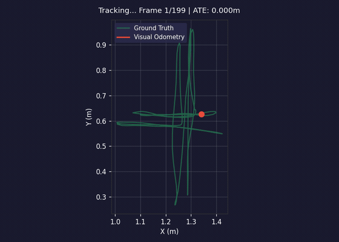
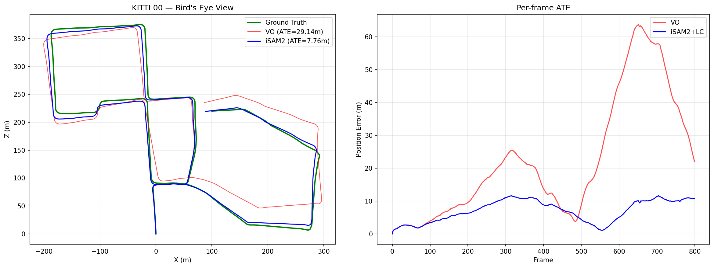

Render
Project the 3-D Gaussians from the candidate camera pose.
Î = R(𝒢, T)
Interactive systems note · 2026
Gaussian Splatting gives SLAM a photorealistic map. GraphSLAM gives it global consistency. The key move is surprisingly small: turn the render error into a GTSAM factor.
render → compare pixels → residual + Jacobian
00 · THE ONE-SENTENCE IDEA
Render the current Gaussian map from a candidate pose, compare that render with the observed keyframe, and tell GTSAM how the pixel error changes when the pose moves.
Now photometric alignment, odometry, IMU, priors, and loop closure all constrain the same pose variables in the same incremental solver.
01 · INTERACTIVE WALKTHROUGH
Use the numbered steps, or press play. The diagrams are a concept model—not a prerecorded video.
INPUT · RGB-D KEYFRAME
The first camera pose receives a strong prior. Its color and depth seed a small set of 3-D Gaussians—the beginning of the map.
What changed: Depth lets us back-project pixels into 3-D; color initializes each Gaussian.
Z₀ = { I₀, D₀ } → 𝒢₀
02 · INSIDE THE BRIDGE
The map stays in PyTorch. During pose optimization it acts as a fixed, differentiable measurement model.
Project the 3-D Gaussians from the candidate camera pose.
Î = R(𝒢, T)
Sample image pixels and stack their RGB differences.
r = vec(Î[P] − I[P])
Measure how every residual changes under a small SE(3) pose update.
J = ∂r / ∂ξ
Return the residual and Jacobian as a standard nonlinear factor.
φsplat(xk; 𝒢)
03 · COMPOSITION, NOT REPLACEMENT
The new factor does not replace odometry, IMU, or loop closure. It joins them. Toggle the available evidence and watch what the graph knows.
04 · FROM IDEA TO RUNNING SYSTEM
These are outputs from the linked implementation, not from the simplified browser model above.

DINOv2 proposes a loop, geometry verifies it, and iSAM2 updates the affected Bayes-tree cliques.
The difference between these two views is exactly the evidence packaged by the SplatFactor.

THE TAKEAWAY
That is the whole architectural shift: modern neural rendering on one side, decades of factor-graph machinery on the other, connected by a residual and its pose Jacobian.